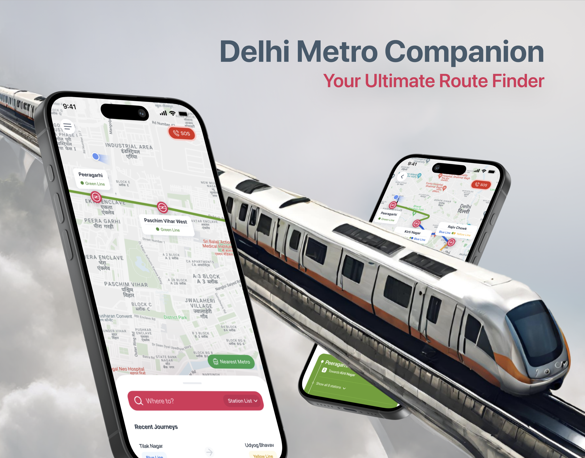

Delhi Metro Route Finder
Redesigned navigation for 2.6M daily metro riders, improved task success rate by 35%.
Role
UX Designer
Timeline
4 Weeks
Focus
Information Architecture, Accessibility
Impact
35% faster route discovery

The Problem
The existing Delhi Metro companion app was cluttered and confusing for tourists and daily commuters alike. Critical tasks like finding the fastest route or calculating fare were buried under unintuitive menus, leading to frustration and cognitive overload.
Research & Insights
Through heuristic evaluation and task-based usability testing with 15 users at major transit hubs, I identified that the primary use case—"How do I get from A to B right now?"—was failing.
Users spent an average of 42 seconds just trying to input their source and destination due to the poor map interface and search functionality.
Design Process & Solution
I restructured the app's Information Architecture, pulling the route finder to the forefront. The new design uses a clean, card-based interface that highlights the fastest route, interchanges, and expected travel time at a glance.
Accessibility was also prioritized, ensuring high contrast modes and clear iconography for non-native speakers.
Results & Takeaways
In prototype testing, the new design improved the task success rate for route finding by 35% and reduced time-on-task from 42 seconds to just 18 seconds.
Key Takeaway: In transit apps, speed and clarity trump features. Removing extraneous options and focusing purely on the primary user journey drastically improves the experience.